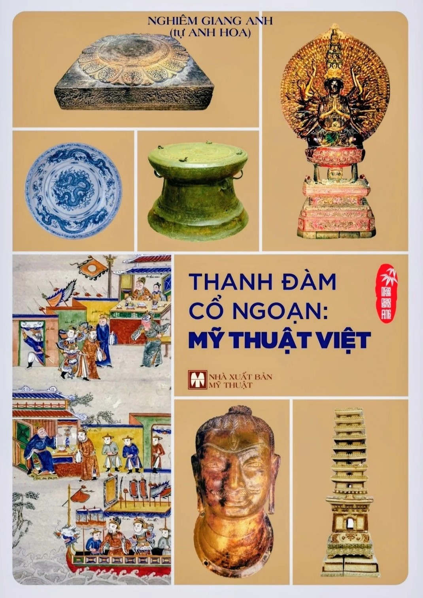
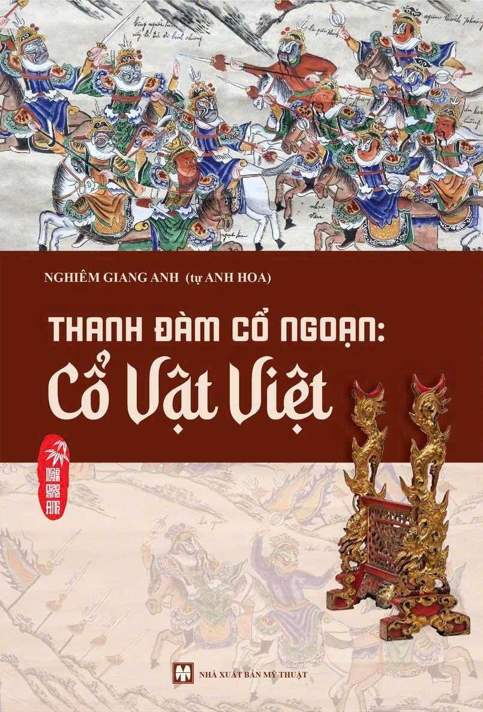

About the Project
Thanh Đàm Cổ Ngoạn is a bilingual platform dedicated to Vietnamese art, antiquities, iconography, and cultural heritage. It presents the publications, research activities, museum collaborations, exhibitions, and selected collection highlights of Nghiem Giang Anh (嚴江英), introducing Vietnamese cultural heritage to an international audience.
VI: Thanh Đàm Cổ Ngoạn là nền tảng song ngữ giới thiệu mỹ thuật, cổ vật, hình tượng học và di sản văn hóa Việt Nam, đồng thời giới thiệu các công trình nghiên cứu, xuất bản, triển lãm và hoạt động bảo tồn của Nghiêm Giang Anh.
Featured Books

Thanh Đàm Cổ Ngoạn: Mỹ Thuật Việt
A comprehensive study of Vietnamese art and iconography from the Hung Kings period through the Nguyen dynasty.
View on Amazon
Thanh Đàm Cổ Ngoạn: Cổ Vật Việt
A study of Vietnamese material culture, historical artifacts, craftsmanship, and cultural heritage across historical periods.
Highlights
2 Published Volumes
The first volumes of the Thanh Đàm Cổ Ngoạn series have been published by Fine Arts Publishing House.
Museum Collaborations
Activities with the Hue Museum of Royal Antiquities, Hanoi Museum, Ho Chi Minh City Museum of History, and Tang Tho Lau.
Research & Iconography
Vietnamese dragons, nghê, Buddhist donor portraits, Han-Nom inscriptions, decorative motifs, and antiquities.
International Outreach
A bilingual platform designed for scholars, museums,